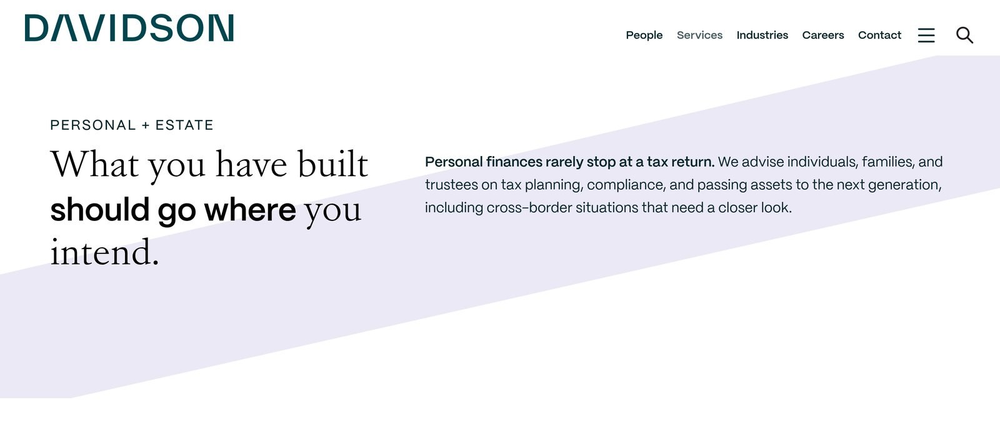
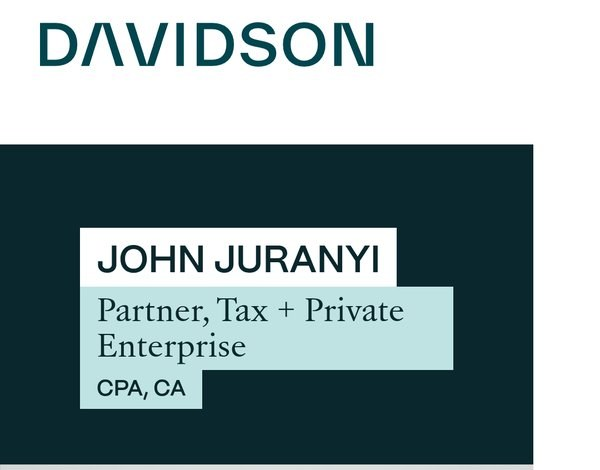
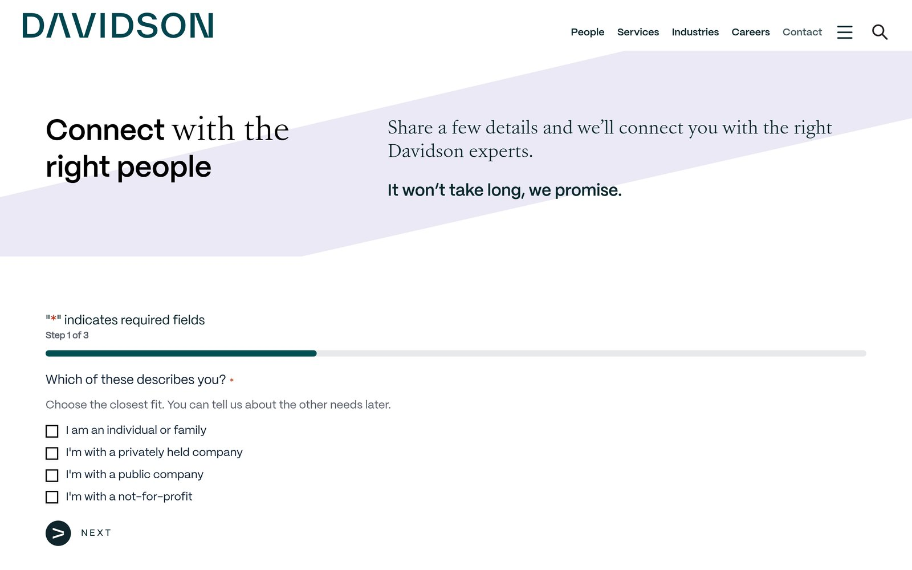
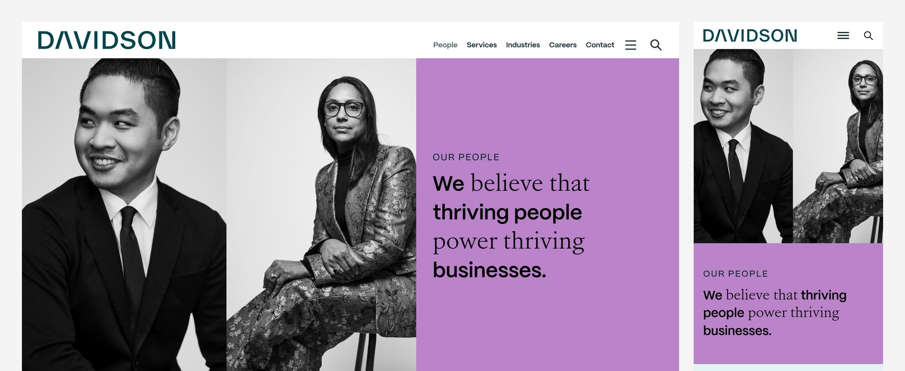
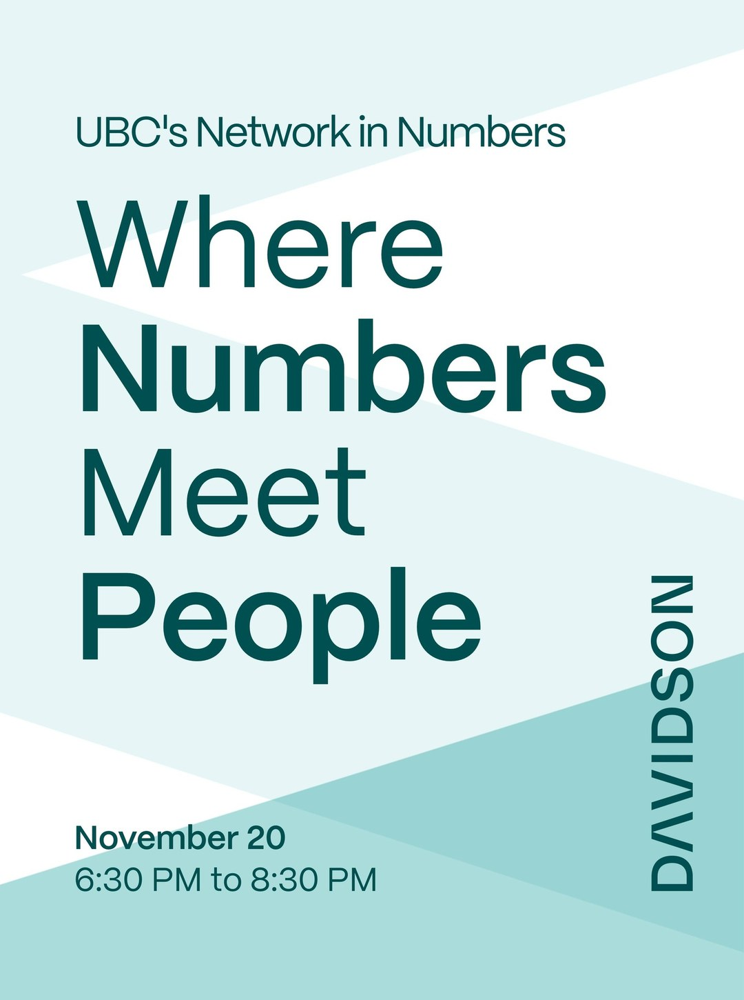
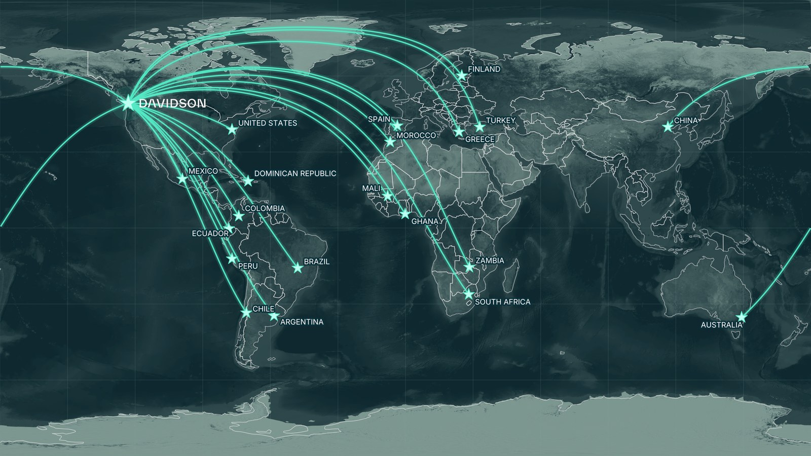

Davidson & Company LLP Website
Helping an accounting firm that doesn’t act like one look, sound, and feel like itself.
A bold new look
When this project kicked off, Davidson’s website made visitors work for answers. Services, people, and insights were hard to find, and the way to get in touch felt generic and unclear. For a firm that helps clients navigate complexity with confidence, that was the problem to solve.
The redesign was a chance to build one clear structure, from the homepage to services, industries, people, careers, and The Bottom Line. I helped lead the redesign from start to finish. I mapped the site structure, used Figma to plan how the design system applies to each page, and then built and refined those pages in WordPress.
The right person, in a few clicks
People come to a professional services site with a question in mind. Can this firm help me? Who would I work with? How do I reach them?
My goal was to help any visitor answer “Is this the right firm for me?” in a few clicks. That visitor could be a client looking for expertise, a candidate getting a feel for the culture, or a referral partner looking for the right contact.
Unmistakably Davidson
Most people don’t picture an accounting firm as a place for brand, creativity, and big ideas. Davidson is different, and the site needed to show it. It leads with storytelling, real people, and a confident voice instead of the usual corporate look.
That personality is built into the design system. Headlines pair two weights, and client categories are colour-coded. Every page type follows a set of modules, and each module has a clear purpose, defined content, and set specs. The result feels like one firm, not a collection of pages, and every new page starts from a proven structure.
The homepage opens with a full-width banner and moves straight into four colour-coded client categories. Visitors choose the one that fits them and go directly to relevant content, so every visit has a clear starting point.

The details that carry it
The system shows up in the small moments: a profile that reads like a person, a form that asks one clear question at a time, a page that holds up on a phone.

One structure, every person
Every profile follows the same structure: name, title, bio, and tags for role, location, industries, and service lines. Clients hire people, not firms, and the directory lets visitors search and filter to the right one.

A clear next step
Each inquiry type gets its own path, in three steps, with its own wording and form. The right message reaches the right person, with less back-and-forth.

Culture before the job board
The careers page leads with a human message, “We retired the accountant stereotype,” and then moves to open roles. Candidates get a sense of belonging first.

Reading that leads on
The Bottom Line uses one consistent article layout, with category and tags, so one read leads to the next instead of ending there.

Checked on a phone
Many visitors arrive on their phones, so I checked how each page looked on mobile after every layout change. Spacing, button placement, and text size got extra attention.
Looking forward
The best design work keeps going after launch. It grows with the people who use it and the team that looks after it. That’s how I want to approach every project from here.
Davidson now has a foundation to build on. New pages start from a proven structure, and the next person in this role has a playbook to start from. The bigger story is just getting started: an accounting firm can be a place where brand, creativity, and big ideas belong.
More from Davidson
The website was the main project, but my work went further. I rebuilt how Davidson plans content with a new content calendar, and I wrote staff bios and site copy in the Davidson voice.

Content and social

Culture, designed

Motion

On campus